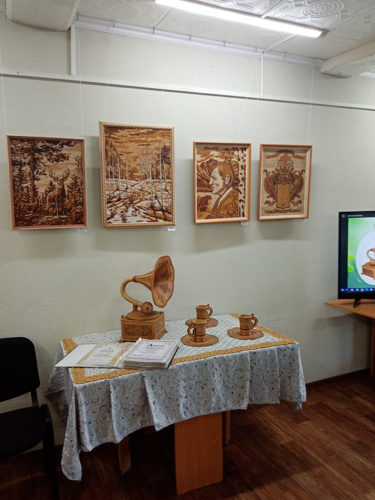

Биография
Яворский Виктор Александрович родился 02 октября 1954 года на станции Куйтун Иркутской области.
После окончания школы в 1970 году поступил в Тулунское педагогическое училище на художественно-графическое отделение. В 1974 году окончил училище по специальности учитель черчения и рисования. С 1974 года по 1976 год служил в рядах Советской армии.
В 1976 году после службы работал художником народного театра в Куйтунском Доме культуры, затем в киносети – художником. С 1978 года работал в школе № 23 ст. Куйтун учителем рисования.
В 1980 году, будучи совсем молодым, открыл детскую художественную школу в городе Тулуне и по 1990 год работал в ней директором.
За это время прошёл курсы повышения директоров в городе Иркутске в 1981 году и в городе Москве в 1985 году. Неоднократно награждался грамотами и был занесён на городскую Доску Почёта.
С 1999 года по 2014 год работал заведующим художественного отделения Гимназии города Тулуна. Постоянно повышал свой профессиональный уровень.
С 2014 года по 2020г. работал преподавателем в Детской художественной школе города Тулуна. В данное время находится на заслуженном отдыхе.
Каждый год принимал участие в отчётной выставке творческих работ «Вдохновение». Принимал участие в выставках преподавателей в городах Иркутск, Братск, Усть-Илимск, Залари, Тальцы, Москва, Тулун. Учащиеся преподавателя Виктора Александровича активно принимают участие в международных, региональных, областных выставках и занимают призовые места. Много выпускников поступают в средние профессиональные и высшие учебные заведения.
С 1994 г. и в данное время Яворский В.А. продолжает работать с берестой. За время работы уже выполнено более 80 работ (картины, туеса, декоративная посуда, матрешки, пасхальные сувениры). Много работ находятся в Москве, Монголии, Иркутске, Красноярске, Анапе и Тулуне.
Имеет звание «Ветеран труда» и награжден знаком «Почётный работник общего образования Российской Федерации». Стаж работы более 40 лет. В 2019 году избран депутатом города Тулуна.
Повышение квалификации
Прошёл курсы повышения квалификации:
- В 1996г. – г. Усть-Илимск по бересте.
- В 1997г. – г. Нижнеудинск по бересте.
- В 2000г. – г. Тулун в ТПК.
- В 2006г. – г. Иркутск.
- В 2009г. – г. Тулун в ТПК.
- В 2015г. – г. Петрозаводск
- В 2017г. –г. Санкт-Петербург.
Награды
Неоднократно награждался благодарственными письмами, грамотами и дипломами различного уровня.
- Авторская выставка в областном художественном музее им. Сукачева – 1998г.
- I место – мастер года – 2009г.
- I место – мастер года – 2011г.
- Диплом 1 степени – за участие в зональном этапе областной выставке-фестивале «Души и рук творение тебе Иркутская земля» - 2014г.
- Диплом – Гран-при – мастер года – 2014г.
- II место – конкурс народных ремесел. г. Тулун – 2015г.
- Диплом – Всероссийский конкурс педагогов «Умната» - 2015г.
- Свидетельство о публикации «Вестник педагога» - 2015г.
- Диплом за участие в выставке – ярмарке народных художественный промыслов России «Ладья, Зимняя сказка» - 2014г. и 2016г. г. Москва
- Диплом лауреата – IX Всероссийский педагогический конкурс «Мастерская гения» - 2018г.
Личная жизнь
Женат. Имеет 4 детей и 7 внуков.
Работы


.jpg)
.jpg)
.jpg)